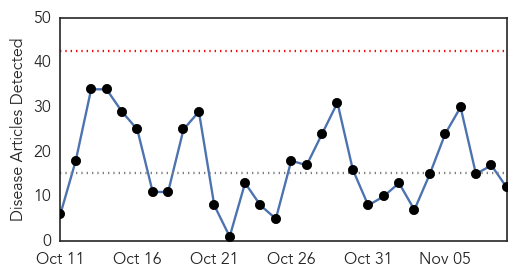
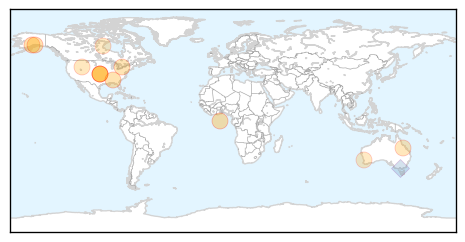
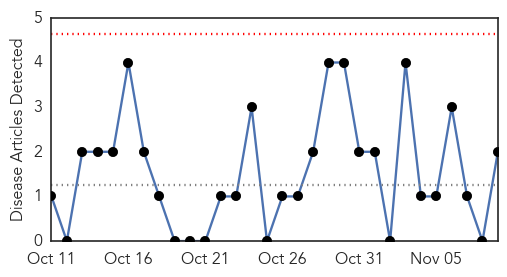
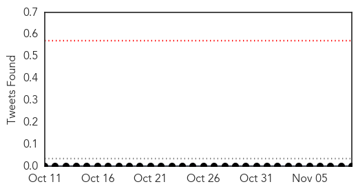

Influenza
30-Day Web Trend
0 alerts, 0 warnings

30-Day Twitter Trend
2 alerts, 0 warnings

Article Locations
Article Confidences

Top Articles:
- 0.999
- The truth about vaccines is the best medicine
- 0.990
- Drive-through flu clinics - Story
- 0.969
- Combatting viral and bacterial lung infections with volatile anesthetics
- 0.939
- Story Time with Aunt Phil, Nov. 9
- 0.921
- American Family Care Declares War on The Flu
- 0.889
- What Flu Season Can Teach Us About Fighting Cyberattacks
- 0.865
- Toronto youth charged with credit card forgery in Huntsville
- 0.787
- Today's stories from newspapers in Ottawa Valley
- 0.751
- November 9, 2015 Archives
- 0.751
- November 9, 2015 Archives
- 0.693
- Today's stories from newspapers in Brockville
- 0.693
- Today's stories from newspapers in Brockville
Top Tweets:
- 0.859
- Quadrivalent influenza vaccine for 2016, will cover four flu subtypes-including both flu B lineages https://t.co/pxH0QznsdR
Pertussis
30-Day Web Trend
0 alerts, 0 warnings

30-Day Twitter Trend
0 alerts, 0 warnings

Article Locations
Article Confidences

Top Articles:
Top Tweets:
-
No tweets found for Nov 09, 2015